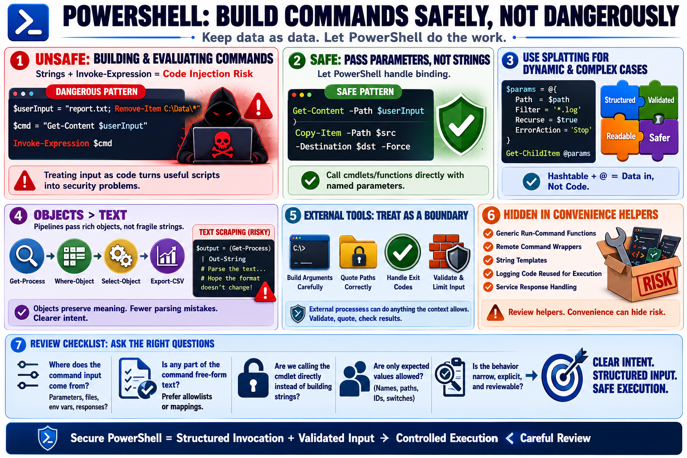

Safe Command Construction
Connecting to LMS... Progress: in progress

Narration
Unsafe command construction is one of the easiest ways to turn a useful script into a security problem. Building a command as a string and then executing it can allow input to become code. Invoke-Expression is especially risky because it evaluates constructed text as PowerShell. In most administrative scripts, there is a safer way to call the command directly, pass arguments as parameters, and let PowerShell handle binding.
Safe parameter passing is the preferred pattern. Instead of concatenating switches and values into a command string, call the cmdlet or function directly with named parameters. Splatting is useful when parameters are dynamic or numerous: a hashtable can collect validated values and pass them to a command in a structured way. This keeps data as data instead of turning it into executable text.
Working with objects is usually safer than scraping and rebuilding raw text. PowerShell pipelines pass rich objects between cmdlets, which reduces parsing mistakes and makes intent clearer. When a script must call an external tool, review how arguments are constructed, how paths are quoted, how exit codes are handled, and whether user-controlled values can change the meaning of the command. Treat external process execution as a boundary.
Command injection patterns often hide in convenience helpers: generic run-command functions, remote command wrappers, string templates, or logging code that later gets reused for execution. During review, ask whether any part of a command line came from parameters, files, environment variables, or service responses. If it did, prefer structured invocation, allowlists, explicit mapping, and narrow values over free-form command text.